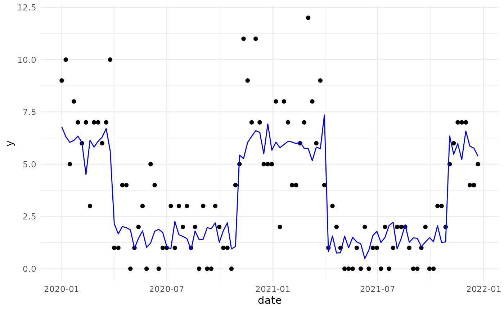

Generates synthetic count data with seasonality for testing BCCP methods.
Usage
generate_synthetic_data(
n = 500,
start_date = "2020-01-01",
seasonal_amplitude = 2,
base_rate = 3,
pred_noise = 0.5,
seed = 42
)Examples
# Generate 2 years of weekly data
df <- generate_synthetic_data(n = 104, start_date = "2020-01-01")
head(df)
#> date y pred month true_mean
#> 1 2020-01-01 9 6.787864 1 6
#> 2 2020-01-08 10 6.321450 1 6
#> 3 2020-01-15 5 6.044880 1 6
#> 4 2020-01-22 8 6.138275 1 6
#> 5 2020-01-29 7 6.339644 1 6
#> 6 2020-02-05 6 6.044916 2 6
# Plot seasonal pattern
if (requireNamespace("ggplot2", quietly = TRUE)) {
library(ggplot2)
ggplot(df, aes(x = date, y = y)) +
geom_point() +
geom_line(aes(y = pred), color = "blue") +
theme_minimal()
}
